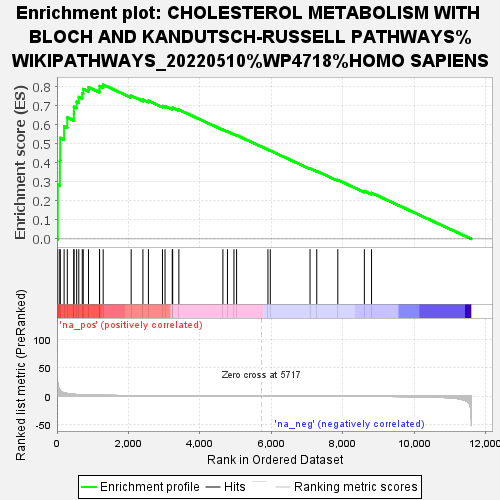
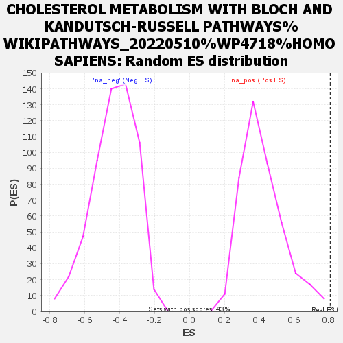

| | | Dataset | dex_ctrl |
| Phenotype | NoPhenotypeAvailable |
| Upregulated in class | na_pos |
| GeneSet | CHOLESTEROL METABOLISM WITH BLOCH AND KANDUTSCH-RUSSELL PATHWAYS%WIKIPATHWAYS_20220510%WP4718%HOMO SAPIENS |
| Enrichment Score (ES) | 0.8092027 |
| Normalized Enrichment Score (NES) | 1.9275725 |
| Nominal p-value | 0.002352941 |
| FDR q-value | 0.41249222 |
| FWER p-Value | 0.988 |
Table: GSEA Results Summary

Fig 1: Enrichment plot: CHOLESTEROL METABOLISM WITH BLOCH AND KANDUTSCH-RUSSELL PATHWAYS%WIKIPATHWAYS_20220510%WP4718%HOMO SAPIENS
Profile of the Running ES Score & Positions of GeneSet Members on the Rank Ordered List

Fig 2: CHOLESTEROL METABOLISM WITH BLOCH AND KANDUTSCH-RUSSELL PATHWAYS%WIKIPATHWAYS_20220510%WP4718%HOMO SAPIENS: Random ES distribution
Gene set null distribution of ES for CHOLESTEROL METABOLISM WITH BLOCH AND KANDUTSCH-RUSSELL PATHWAYS%WIKIPATHWAYS_20220510%WP4718%HOMO SAPIENS